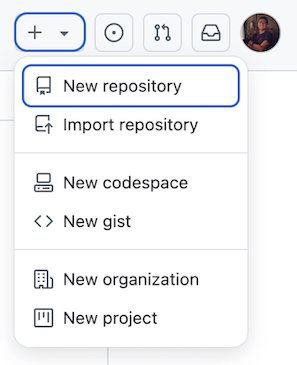
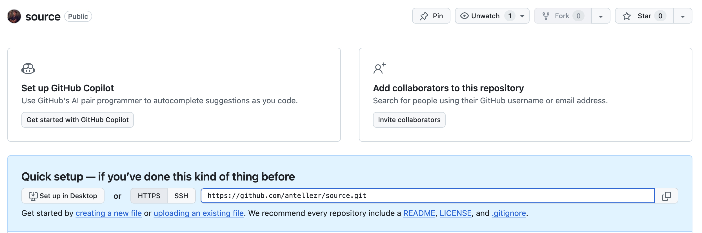

Create a Portfolio Website #
Purpose #
This document describes the process for creating a static portfolio website using Hugo and GitHub Pages.
Audience #
This document is intended for individuals interested in using Hugo and GitHub Pages to create and host a portfolio.
Overview #
To create and publish a portfolio website, take the following steps:
- Create two GitHub repositories to host the content and the site’s files
- Create a Hugo site
- Set up the site configuration file
- Add content to the site
- Clone the GitHub Pages Site Repository
- Add the GitHub Site Repository as a Submodule
- Deploy the site using GitHub Pages
Prerequisites #
Before you begin this guide you must:
- Install Hugo (version 0.134 or higher)
- Install Git
- Create a GitHub account
Create the GitHub Repositories #
This guide uses two separate repositories linked via Git submodules, following these criteria:
- Content Repository: Stores Markdown content, Hugo configuration files, and themes subdirectories.
- Site Repository: Contains the HTML, CSS, and JavaScript files generated by Hugo.
A Git submodule is a repository nested inside another repository, enabling you to manage content separately from deployment files while keeping them linked. Using a submodule ensures that updates to your website’s source code do not directly affect the published site until changes are explicitly pushed.
Content Repository #
To create the source content repository from GitHub’s web UI, follow the next steps:
-
Go to your GitHub dashboard.
GitHub Dashboard -
In the upper-right corner of the page, select the New Repository option from the + drowpdown list, as shown in Figure 1.

Figure 1. Create a New Repository -
From the Owner dropdown list, select the account you want to own the repository.
-
Type the name of your repository, in this example,
source -
Select
Publicas the repository visibility. To learn more about public and private repositories, see About repository visibility. -
Click the Create repository button at the bottom of the page.
Figure 2 displays the the repository overview page.
Figure 2. Repository Overview Page Preview
Note: You can also create a repository using the GitHub CLI. To learn more, see
gh repo createin the GitHub CLI documentation.
Site Repository #
Create the site repository using a similar process:
- Go to your GitHub dashboard.
GitHub Dashboard - Select the New Repository option from the + drowpdown list.
- From the Owner dropdown list, select the account you want to own the repository.
- Type
{github-username}.github.ioas the name of your repository. - Select
Publicas the repository visibility. - Click the Create repository button.
Note: Use your
{github-username}.github.ioas the repository name for a shorter URL when the site is deployed. Alternatively, you can choose a different repository name, but the site’s URL will then appear as{github-username}.github.io/{repository-name}.
Create a Hugo site #
Hugo is a static site generator that transforms Markdown files into a structured website. This section covers setting up a new Hugo project and configuring it with a theme. To create a new Hugo site in your source directory using the Hugo Book theme, follow the next steps:
-
In the location of your choice, clone the
sourcerepository:git clone https://github.com/{github-username}/source.git -
Change to your
sourcedirectory:cd source -
Create a new Hugo site:
hugo new site {hugo-site-name}The root directory structure for your project is created.
-
Change into the site directory:
cd {hugo-site-name} -
Add the Hugo Book theme as a Git submodule:
git submodule add https://github.com/alex-shpak/hugo-book themes/hugo-book -
Set the theme in the
hugo.tomlsite configuration file.echo "theme = 'hugo-book'" >> hugo.toml
Set Up the Site Configuration File #
The hugo.toml configuration file is the main settings file for a Hugo site. It defines site-wide configuration options that control how Hugo generates and structures the static site, including:
- Site metadata
- Theme configuration
- Content settings
- Custom parameters
Edit the hugo.toml configuration file to match your site details:
baseURL = 'https://{github-username}.github.io/'
languageCode = 'en-us'
title = '{User Name} Portfolio'
theme = 'hugo-book'
# Shortcodes support
[markup]
[markup.goldmark.renderer]
unsafe = true
Add Content to the Site #
The Hugo Book theme includes an exampleSite directory with sample pages and blog posts that showcase the theme’s features. These examples serve as the starting point for this guide.
To copy the content of the exampleSite subdirectory to your root directory, use the following command:
cp -R themes/hugo-book/exampleSite/content.en/* ./content
By default, the theme renders pages from the /content/docs section as a menu in a tree structure.
You can set title and weight in the front matter of pages to adjust the order and titles in the menu, as well as other parameters to hide or alter URLs in the menu.
Alternatively, you can create new content manually using the following command:
hugo new content content/posts/my-first-post.md
Note: For more information about content types in Hugo, see the Content Management section of the Hugo documentation.
Clone the GitHub Pages Site Repository #
To clone the GitHub Pages Site Repository, follow the next steps:
-
Navigate back to the parent directory:
cd .. -
Clone the GitHub Pages repository:
clone repo https://github.com/{github-username}/{github-username}.github.io.git -
Navigate into the repository:
cd {github-username}.github.io -
Create a README file:
Touch README.md -
Commit and push the README file to the repository:
git add . git commit -m "Adds README" git push origin main
Add the GitHub Site Repository as a Submodule #
To connect your Hugo project to the GitHub Pages repository, follow these steps.
-
Return to the Hugo root directory:
cd ../source/{hugo-site-name} -
Add the site repository as a submodule:
git submodule add -b main https://github.com/{github-username}/{github-username}.github.io.git public -
Verify the submodule was added:
ls public -
Ensure the
publicfolder contains aREADME.mdfile.
Deploy the Site Using GitHub Pages #
To make your Hugo site publicly accessible, you need to generate the static website files and deploy them to GitHub Pages. Follow these steps to build and publish your site.
-
Start the local development server:
hugo server
Note: This command starts the local server and enables you to view your site in the browser. To stop the server, press
Ctrl + C.
-
Generate the static website:
hugo -t hugo-book -
Navigate to the
publicdirectory:cd public -
Commit and push:
git add . git commit -m "Initial site deployment" git push origin main
Once the public directory is pushed, your site is live at:
https://{github-username}.github.io/